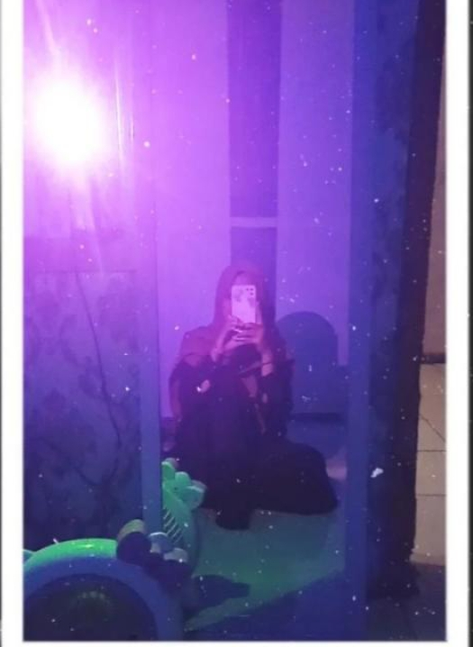
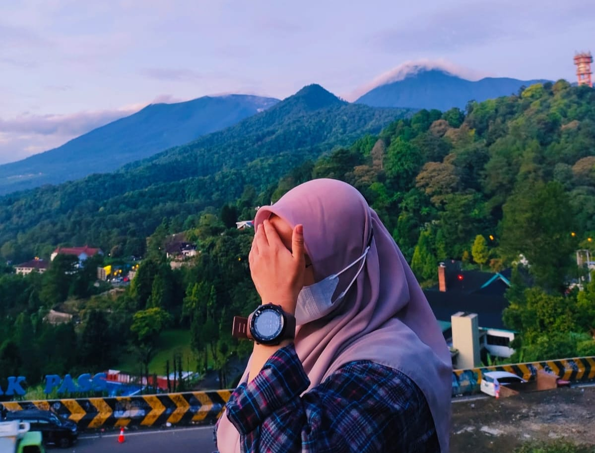

Alfian Nur Usyaid
"Ini adalah langkah awal sebelum meretas eNeF"

Alief Luqiakbar
"Bukan Perihal Bagaimana Nanti, Tapi Perihal Nanti Bagaimana"

Fatiah Al Zahra
"Kualitas hidup kita salah satu nya di tentukan dari informasi yang kita dapatkan"

Anggreyni Ayu Hapsary
"Tidak ada yang lebih berharga selain waktu,ilmu dan pengalaman"
Tentang Kami
Ini merupakan bagian dari seorang Alfian Nur Usyaid ia merupakan seorang anak
laki-laki
satu-satunya, anak ke satu dari dua bersaudara.
Lahir pada 22 Maret 2004 di Bogor, Jawa Barat. Jenjang pendidikan yang pernah dilalui dan sedang
dilakukan : MI Sirojul Wildan, MTS Sirojul Wildan, MA Sirojul Athfal, STT Nurul Fikri.
Media Sosial : IG (liand.2nd), FB (Alfian), GitHub (LIan2nd), Silahkan dicek jika ingin
mengenalnya lebih jauh pada media sosial yang tertera.
Ini merupakan bagian dari seorang Alief Luqiakbar ia merupakan seorang anak laki-laki
satu-satunya, anak ke tiga dari empat bersaudara.
Lahir pada 19 Maret 2004 di Cirebon, Jawa Barat. Jenjang pendidikan yang pernah dilalui dan sedang
dilakukan : SDN 2 Banjarsari, SMPN 1 Ciawi, SMAN 1 Ciawi, STT Nurul Fikri.
Media Sosial : IG (alieflakbar_19), FB (Alief Luqiakbar), GitHub (AliefLuqiakbar),
Silahkan
dicek jika ingin mengenalnya lebih jauh pada media sosial yang tertera.
Ini merupakan bagian dari seorang Fatiah Al Zahraia merupakan seorang anak Perempuan,
anak ke satu dari empat bersaudara.
Lahir pada 30 November 2003 di Bogor, Jawa Barat. Jenjang pendidikan yang pernah dilalui dan sedang
dilakukan : SDN 02 Cicadas, MTS Sirojul Falah, MAS Nurul Qur'an Ciangsana, STT Nurul Fikri.
Media Sosial : IG (fatiahal_zahra), FB (fatiah), GitHub (Fatiahalzahra), Silahkan dicek
jika ingin mengenalnya lebih jauh pada media sosial yang tertera.
Ini merupakan bagian dari seorang Anggreyni Ayu Hapsary ia merupakan seorang anak
perempuan, anak ke tiga dari empat bersaudara.
Lahir pada 10 Mei 2003 di Jakarta, DKI Jakarta. Jenjang pendidikan yang pernah dilalui dan sedang
dilakukan : SDN Jurangmangu Timur 02, MTsN 13 Jakarta, SMA Negeri 5 Kota Tangerang Selatan, STT Nurul
Fikri.
Media Sosial : IG (anggreyni_hpsr), FB (Anggreyni Ayu), GitHub (ANGGREYNIAYU07), Silahkan
dicek jika ingin mengenalnya lebih jauh pada media sosial yang tertera.